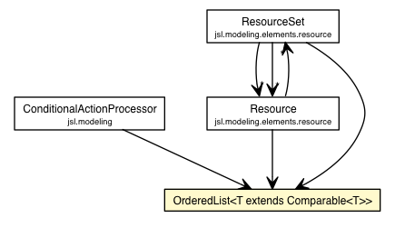

jsl.utilities.misc
Class OrderedList<T extends Comparable<T>>

java.lang.Object
 jsl.utilities.misc.OrderedList<T>
jsl.utilities.misc.OrderedList<T>
- All Implemented Interfaces:
- Iterable<T>, Collection<T>
public class OrderedList<T extends Comparable<T>>
- extends Object
- implements Collection<T>
This class encapsulates the holding of Requests for
resources.
|
Field Summary |
protected List<T> |
myList
Holds requests that are waiting for some
units of the resource |
| Methods inherited from class java.lang.Object |
clone, equals, finalize, getClass, hashCode, notify, notifyAll, toString, wait, wait, wait |
myList
protected List<T extends Comparable<T>> myList
- Holds requests that are waiting for some
units of the resource
OrderedList
public OrderedList()
add
public boolean add(T obj)
- Adds the object to the list
based on the Comparable interface
- Specified by:
add in interface Collection<T extends Comparable<T>>
- Parameters:
request -
size
public int size()
- Specified by:
size in interface Collection<T extends Comparable<T>>
set
public T set(int arg0,
T arg1)
peekNext
public T peekNext()
removeNext
public T removeNext()
remove
public T remove(int arg0)
remove
public boolean remove(T arg0)
listIterator
public ListIterator<T> listIterator(int arg0)
listIterator
public ListIterator<T> listIterator()
lastIndexOf
public int lastIndexOf(T arg0)
iterator
public Iterator<T> iterator()
- Specified by:
iterator in interface Iterable<T extends Comparable<T>>- Specified by:
iterator in interface Collection<T extends Comparable<T>>
isEmpty
public boolean isEmpty()
- Specified by:
isEmpty in interface Collection<T extends Comparable<T>>
indexOf
public int indexOf(T arg0)
get
public T get(int arg0)
contains
public boolean contains(T arg0)
clear
public void clear()
- Specified by:
clear in interface Collection<T extends Comparable<T>>
contains
public boolean contains(Object arg0)
- Specified by:
contains in interface Collection<T extends Comparable<T>>
toArray
public Object[] toArray()
- Specified by:
toArray in interface Collection<T extends Comparable<T>>
toArray
public <T> T[] toArray(T[] arg0)
- Specified by:
toArray in interface Collection<T extends Comparable<T>>
remove
public boolean remove(Object arg0)
- Specified by:
remove in interface Collection<T extends Comparable<T>>
containsAll
public boolean containsAll(Collection<?> arg0)
- Specified by:
containsAll in interface Collection<T extends Comparable<T>>
addAll
public boolean addAll(Collection<? extends T> arg0)
- Specified by:
addAll in interface Collection<T extends Comparable<T>>
removeAll
public boolean removeAll(Collection<?> arg0)
- Specified by:
removeAll in interface Collection<T extends Comparable<T>>
retainAll
public boolean retainAll(Collection<?> arg0)
- Specified by:
retainAll in interface Collection<T extends Comparable<T>>
Copyright © 2012 Manuel D. Rossetti. All Rights Reserved.